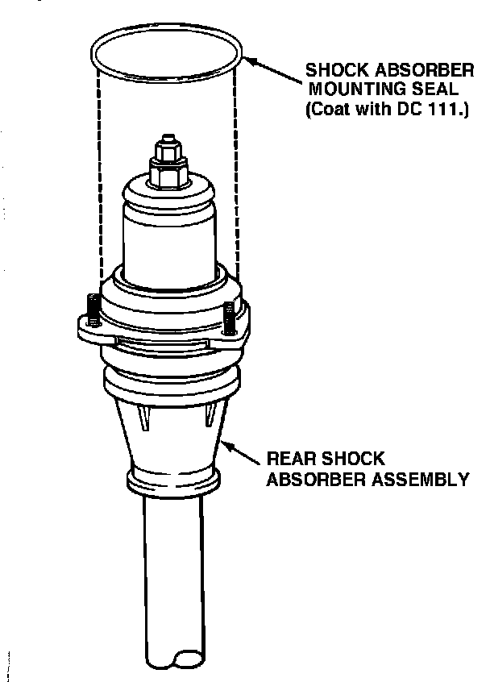

C Pillar Area - Clicking Noise
88acura01January 18, 1988
YEAR MODEL APPLICATION
1988 LEGEND ALL
SEDAN
88-002
Clicking Noise from "C" Pillar Area
SYMPTOM A "clicking" noise from the "C" pillar or package tray area. (The noise is very similar to a loose wire or cable hitting against the sheet metal.)
PROBABLE CAUSE One of the shock absorber mounting seals rubbing against the shock absorber mount when driving over irregular surfaces.

CORRECTIVE ACTION
1. Raise the rear of the car.
2. Remove the shock absorber assembly from the affected side of the vehicle.
3. Coat the shock absorber mounting seal with Dow Corning DC 111.
4. Reinstall the shock absorber assembly and lower the car.
PARTS INFORMATION
Dow Corning DC III
(Call Dow Corning Customer Service at 800-248-2481 to locate the nearest distributor of DC 111.)
WARRANTY CLAIM INFORMATION
Operation number: 417020
Flat rate time: 0.6 hour
Failed P/N: 52941-SD4-003
Defect code: 042
Contention code: B07